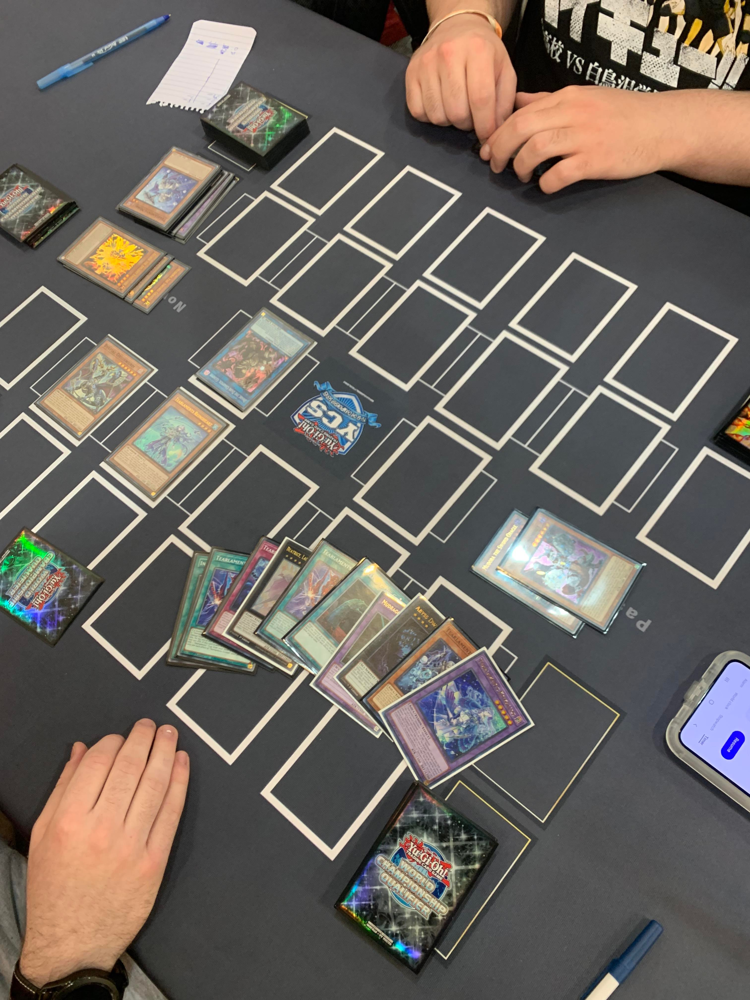

Yugioh
Yugioh is a strategy card game about outsmarting your opponent. It is my favorite because I enjoy playing the game because it is very fun.

Making Games
I love making video games because it's an outlet to use my creativity. I use Godot to make all my games. You can find my games here.

Science
Science is my favorite subject and I enjoy learning new things in it. My favorite science is physics.